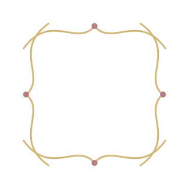
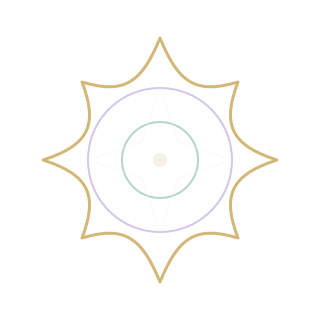
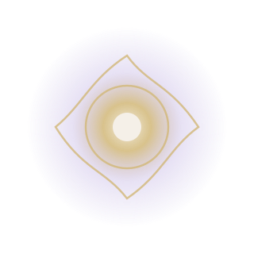
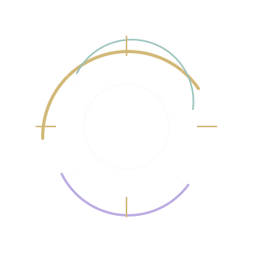
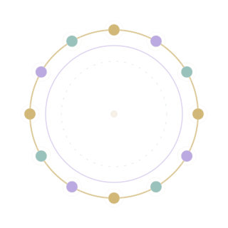

Figma v3 · Diegetic Interface Lookdev
The interface becomes an object.
The Compendium moves from a flat menu toward a physical field instrument: closed relic → mechanical bloom → living resonance UI. The web port keeps the public token system intact while translating the newest Figma artifact and motion grammar.
State 01 · Closed Artifact
A precious field instrument at rest.
Ivory chassis, deep inset, folded resonance petals and a restrained central core establish physical weight before navigation appears.



State 02 · Latch Release / Unfold
Mechanisms separate; inner structure emerges.
Chassis wings release first, then the aperture, astrolabe and core become legible as distinct mechanical layers instead of one decorative animation.


State 03 · Open Resonance UI
Navigation becomes a celestial machine.
Radial categories move to the periphery while the resonance core remains dominant, preserving a single focal hierarchy even when the interface is fully alive.
Dimensional, radial, musical.
Figma Motion · 3.2 s reference loop
01 · AssembleLayers converge; physical hierarchy arrives first.0–240 ms
02 · BloomCore scales and glows after the structure is readable.180–520 ms
03 · OrbitRadial pieces counter-rotate with restrained depth.420–900 ms
04 · ResolveTooltip and navigation settle into a quiet resting state.760–1200 ms
Motion rule: hierarchy first — position → scale → glow → particles. Never animate every layer at once. Source frames: Figma 17:2 (motion authoring kit) and 26:2 (Magical Artifact v3). The implementation uses durable repo-owned resonance SVGs rather than expiring Figma CDN assets and maps the visual language onto the website token SSOT.